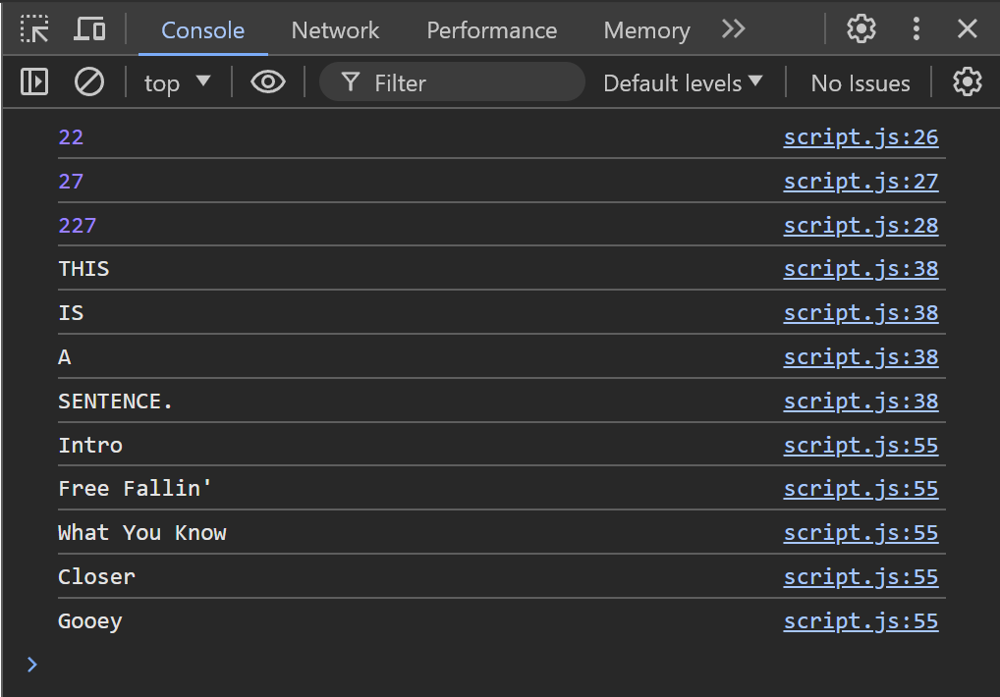

Higher Order Programming
Objectives
- Describe what qualifies a function as "higher order"
- Assign functions to variables
- Utilize callback functions as arguments to other functions
- Use forEach() as an alternative to a standard for loop
- Apply the map() function to solve algorithmic problems
Key Terms
higher order programming
treating functions like data; use of functions that include functions as parameters
function expression
a way to define a function and assign it to a variable
let greet = function(name) {
console.log("Hello, " + name + "!");
};
callback
a function provided as an argument to another function; will be invoked at a future point in time, often after a specific action has been performed
forEach()
higher order array method for iterating over items and invoking a common function for each item in the array
let people = [ 'Alice', 'Bob', 'Candice'];
let greetFunction = function(person) {
console.log('Hi ' + person);
}
people.forEach(greetFunction);
Higher Order Programming Assignment
Make sure to go through the guide to starting an assignment before continuing. There will be a folder called "examples" where you can try out the example code below.
Higher Order Programming Background
Recall that a function is simply a block of code.
// Definition
function doubleIt(num){
return num * 2;
}
It can optionally accept some parameters, and it returns a value when we invoke it.
// Invocation
doubleIt(2); // returns 4
Up to this point, there has been a clear distinction between our functions and our data.
Our data has always been numbers, strings, and objects that we have sometimes assigned to variables.
let dataNum = 6;
console.log(typeof dataNum); // number
let dataStr = 'Everest';
console.log(typeof dataStr); // string
Higher order programming, also called functional programming, involves treating our functions themselves like data.
let tripleIt = function(num){
return num * 3;
}
console.log(typeof tripleIt); // function
tripleIt(33);
Notice how we can assign our function to a variable, and we use the variable name as the function's name. This syntax is called a Function Expression.
Callback Functions
In the above section, we found out that we can treat our functions themselves as data. This also means that we can pass functions to other functions as an argument. Functions that we pass to other functions are called callback functions.
Let's do an example by reusing the functions we declared above:
let doubleIt = function(num){
return num * 2;
}
let tripleIt = function(num){
return num * 3;
}
function doSomethingTo5(callback) {
return callback(5);
}
The function doSomethingTo5 takes a callback function as an argument and stores a reference to it in the parameter callback. Inside the function block, we return the result of calling callback with 5 as an argument.
Let's run this code using our 2 functions as callbacks:
let doubleIt = function(num){
return num * 2;
}
let tripleIt = function(num){
return num * 3;
}
function doSomethingTo5(callback) {
return callback(5);
}
console.log(doSomethingTo5(doubleIt)); // 10
console.log(doSomethingTo5(tripleIt)); // 15
Run this code in your example directory, and take a look at the output. Does it match the expected?
Array.forEach()
We won't go into all of the possible ways we can use Higher Order Programming in our code, but one of the most common places to use higher order programming is with arrays.
Let's pretend we're a bit of a cat hoarder, so decide it's best to store our entire collection of cats in an array.
let cats = ["Sylvester", "Tigger", "Mr. Bigglesworth", "Felix", "Simba"];
When it's dinner time, we need to yell for each of our kitties by name. Up to now, the way we might handle this is with a standard for loop:
let cats = ["Sylvester", "Tigger", "Mr. Bigglesworth", "Felix", "Simba"];
for (let i =0; i < cats.length; i++){
console.log(cats[i].toUpperCase() + ", IT'S DINNER TIME!");
}
This solution will certainly get the job done. For loops like this are hopefully becoming second nature to us by now, but there are a few details that make our code a bit "wordy". When we're reading this code, we have to manage the i counter ourselves. It's a bit distracting to look at.
Whenever we are referencing the current cat with an iteration, we have to constantly remind ourselves that we're inside of a loop, and we need to use our counter to say cats[i].
Needing to "process" every item in an array is so common that JavaScript includes a built-in function called forEach to make this easier for you.
forEach is a higher order function that takes a callback function as an argument.
The callback function works like a "hint" to forEach to tell it how to process a SINGLE item. In our case, we might use a function like this one to describe how to process a single cat.
let forOne = function(cat){
console.log(cat.toUpperCase() + ", IT'S DINNER TIME!");
}
Notice that we're not saying cats[i] here. We're simply writing our function to accept a single parameter called cat, and we're processing that single cat in the function.
Now that we've set the rule for how to handle a single cat, the forEach function can do the rest of the work for us!
let cats = ["Sylvester", "Tigger", "Mr. Bigglesworth", "Felix", "Simba"];
let forOne = function(cat){
console.log(cat.toUpperCase() + ", IT'S DINNER TIME!");
}
cats.forEach(forOne);
Try running the above code, and you'll notice that it does exactly what our earlier for loop did for us. It just happens to be more concise and readable.
Complete the Higher Order Programming Exercise before continuing.
Higher Order Programming Exercise
Complete the following prompts below:
Calculator Function
- Define a function named
calculator - This function has three parameters
num1- the first number to perform math onnum2- the second number to perform math onoperation- a callback function that performs a mathematical operation on the two input. There are 4 pre-defined functions calledaddition,subtraction,multiplication, anddivision.
-
The purpose of this function is to call the
operationfunction onnum1andnum2and return the result.Example Input:
calculator(3, 5, multiplication)Expected Output:
15
Implement the calculator function and call it with 3 examples (Just like we did in the Functions Exercise) Log the results to the console:
- add 7 and 15
- subtract 8 from 35
- divide 681 by 3
Poor man's forEach
- Define a function called
forEach - This function has 2 parameters
array- an input arrayfunc- a callback function to perform on each element ofarray
-
The purpose of this function is to mimic Array's built-in
forEachhigher order functionExample Input:
let logIt = function(element) { console.log(element); } forEach([1, 3, 5, 7], logIt)Expected Output:
1 3 5 7Use a normal
forloop to accomplish this. -
Declare a variable
yellItand assign to it a function that takes one string parameterstr.yellItwill logstrin all caps. -
Declare an array
wordsthat contains at least 4 strings, and call your poor man'sforEachmethod with thewordsarray andyellItfunction as your arguments.
Print Each Song Title
-
Examine the
exampleSongsarray. It is an array of objects that each represent a song. -
Using the built-in
forEachmethod of arrays, print ONLY the title of each song to the console. You will need to define a callback functionprintSongTitlethat prints out ONE song's title, and pass it to yourforEachcall.
Once you've completed each of the above exercises, take a screenshot of your Developer Console. It should look similar to the one below, but may contain different values for the "Poor man's forEach" exercise.

Submitting
Complete the questions in quiz.md if you haven't already.
Please follow the instructions in submitting an exercise to submit your assignment solution.